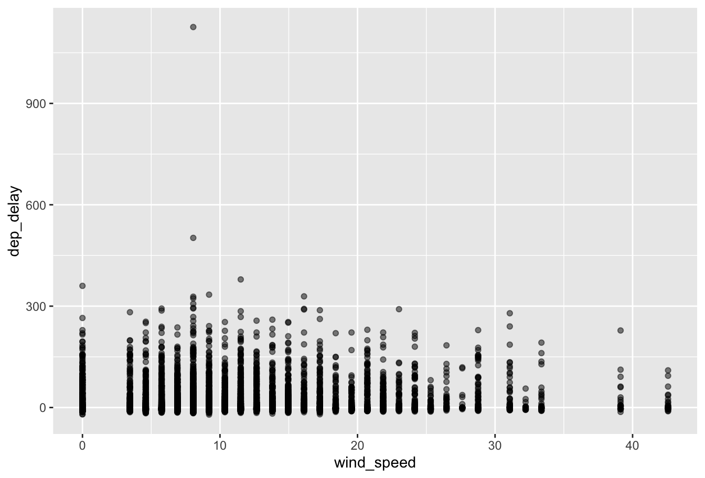
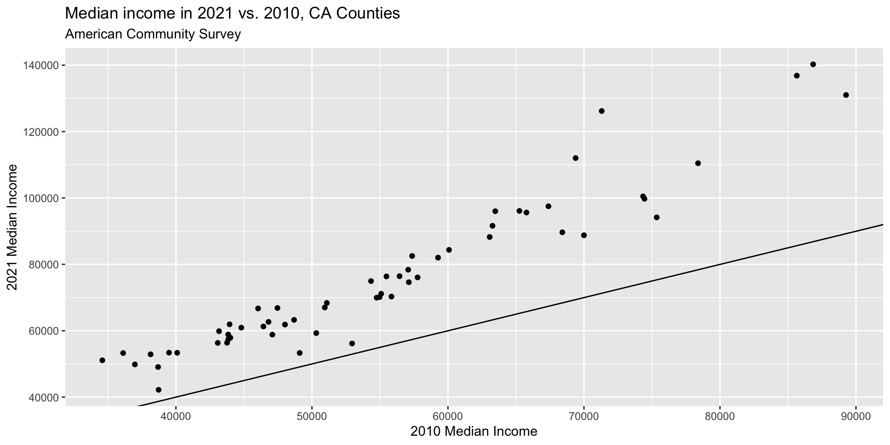

MATH167R: Merging Data
Overview of today
- Merging data
- Exploratory data analysis and workflow
- Organizing output and saving images
- Lab time
Joining data
Often we will want to combine two data frames. To do so, we typically need a key variable which exists in both data frames.
Example: Flights data
| year | month | day | dep_time | sched_dep_time | dep_delay | arr_time | sched_arr_time | arr_delay | carrier | flight | tailnum | origin | dest | air_time | distance | hour | minute | time_hour |
|---|---|---|---|---|---|---|---|---|---|---|---|---|---|---|---|---|---|---|
| 2013 | 1 | 1 | 517 | 515 | 2 | 830 | 819 | 11 | UA | 1545 | N14228 | EWR | IAH | 227 | 1400 | 5 | 15 | 2013-01-01 05:00:00 |
| 2013 | 1 | 1 | 533 | 529 | 4 | 850 | 830 | 20 | UA | 1714 | N24211 | LGA | IAH | 227 | 1416 | 5 | 29 | 2013-01-01 05:00:00 |
| 2013 | 1 | 1 | 542 | 540 | 2 | 923 | 850 | 33 | AA | 1141 | N619AA | JFK | MIA | 160 | 1089 | 5 | 40 | 2013-01-01 05:00:00 |
| 2013 | 1 | 1 | 544 | 545 | -1 | 1004 | 1022 | -18 | B6 | 725 | N804JB | JFK | BQN | 183 | 1576 | 5 | 45 | 2013-01-01 05:00:00 |
| 2013 | 1 | 1 | 554 | 600 | -6 | 812 | 837 | -25 | DL | 461 | N668DN | LGA | ATL | 116 | 762 | 6 | 0 | 2013-01-01 06:00:00 |
| 2013 | 1 | 1 | 554 | 558 | -4 | 740 | 728 | 12 | UA | 1696 | N39463 | EWR | ORD | 150 | 719 | 5 | 58 | 2013-01-01 05:00:00 |
Keys
| carrier | name |
|---|---|
| 9E | Endeavor Air Inc. |
| AA | American Airlines Inc. |
| AS | Alaska Airlines Inc. |
| B6 | JetBlue Airways |
| DL | Delta Air Lines Inc. |
| EV | ExpressJet Airlines Inc. |
Joining Data
We can use SQL-like join statements in R:
inner_join(x, y, by = "key"): match observations only when exact keys are equalleft_join(x, y, by = "key"): keep all observations inx, match observations inyby keys,NAotherwiseright_join(x, y, by = "key"): keep all observations iny, match observations inxby keys,NAotherwiseouter_join(x, y, by = "key"): keep all observations inxandy, match keys where possible,NAotherwise
Usually, left_join() will suffice.
Example: Band members
Example: Band members
Example: Band members
# A tibble: 3 × 3
name band plays
<chr> <chr> <chr>
1 John Beatles guitar
2 Paul Beatles bass
3 Keith <NA> guitar# A tibble: 4 × 3
name band plays
<chr> <chr> <chr>
1 Mick Stones <NA>
2 John Beatles guitar
3 Paul Beatles bass
4 Keith <NA> guitarExample: Band members
Inner join vs. outer join


Images courtesy of Hadley Wickham. (Link)
Base R
name band plays
1 John Beatles guitar
2 Paul Beatles bass name band plays
1 John Beatles guitar
2 Keith <NA> guitar
3 Mick Stones <NA>
4 Paul Beatles bassBase R
name band plays
1 John Beatles guitar
2 Mick Stones <NA>
3 Paul Beatles bass name band plays
1 John Beatles guitar
2 Keith <NA> guitar
3 Paul Beatles bassExercise: Flights data
How can we combine the flights and airlines data?
| year | month | day | dep_time | sched_dep_time | dep_delay | arr_time | sched_arr_time | arr_delay | carrier | flight | tailnum | origin | dest | air_time | distance | hour | minute | time_hour | name |
|---|---|---|---|---|---|---|---|---|---|---|---|---|---|---|---|---|---|---|---|
| 2013 | 1 | 1 | 517 | 515 | 2 | 830 | 819 | 11 | UA | 1545 | N14228 | EWR | IAH | 227 | 1400 | 5 | 15 | 2013-01-01 05:00:00 | United Air Lines Inc. |
| 2013 | 1 | 1 | 533 | 529 | 4 | 850 | 830 | 20 | UA | 1714 | N24211 | LGA | IAH | 227 | 1416 | 5 | 29 | 2013-01-01 05:00:00 | United Air Lines Inc. |
| 2013 | 1 | 1 | 542 | 540 | 2 | 923 | 850 | 33 | AA | 1141 | N619AA | JFK | MIA | 160 | 1089 | 5 | 40 | 2013-01-01 05:00:00 | American Airlines Inc. |
| 2013 | 1 | 1 | 544 | 545 | -1 | 1004 | 1022 | -18 | B6 | 725 | N804JB | JFK | BQN | 183 | 1576 | 5 | 45 | 2013-01-01 05:00:00 | JetBlue Airways |
| 2013 | 1 | 1 | 554 | 600 | -6 | 812 | 837 | -25 | DL | 461 | N668DN | LGA | ATL | 116 | 762 | 6 | 0 | 2013-01-01 06:00:00 | Delta Air Lines Inc. |
| 2013 | 1 | 1 | 554 | 558 | -4 | 740 | 728 | 12 | UA | 1696 | N39463 | EWR | ORD | 150 | 719 | 5 | 58 | 2013-01-01 05:00:00 | United Air Lines Inc. |
Exercise: Flights data
Use the flights and weather datasets from the nycflights13 package to create a scatter plot with wind_speed on the x-axis and dep_delay on the y-axis.
Exercise: Flights data
Example: California data
The tidycensus package provides easy access to Census data via R. In order to download data using tidycensus, you will need a Census API Key.
For now, you can think of an API key as an ID card you use to download data from the Census.
Example: California data
library(tidycensus)
# the following command can be used to save your API key on your computer
# census_api_key("YOUR_KEY_HERE", overwrite = FALSE, install = FALSE)
# the following code loads my local Census API Key, which is used to access
# census data
Sys.getenv("CENSUS_API_KEY")
# 2021 median income by county
income_2021 <- get_acs(geography = "county",
variables = c(medincome = "B19013_001"),
state = "CA",
year = 2021)
# 2010 median income by county
income_2010 <- get_acs(geography = "county",
variables = c(medincome = "B19013_001"),
state = "CA",
year = 2010)Example: California data
FALSE # A tibble: 6 × 5
FALSE GEOID NAME variable estimate moe
FALSE <chr> <chr> <chr> <dbl> <dbl>
FALSE 1 06001 Alameda County, California medincome 112017 1043
FALSE 2 06003 Alpine County, California medincome 96000 24486
FALSE 3 06005 Amador County, California medincome 69955 5482
FALSE 4 06007 Butte County, California medincome 59863 1989
FALSE 5 06009 Calaveras County, California medincome 70119 6448
FALSE 6 06011 Colusa County, California medincome 61861 6540Example: California data
income_2021 <- income_2021 |>
pivot_wider(
names_from = variable,
values_from = c(estimate, moe)
) |>
select(-moe_medincome) |>
rename(medincome_2021 = estimate_medincome)
head(income_2021)# A tibble: 6 × 3
GEOID NAME medincome_2021
<chr> <chr> <dbl>
1 06001 Alameda County, California 112017
2 06003 Alpine County, California 96000
3 06005 Amador County, California 69955
4 06007 Butte County, California 59863
5 06009 Calaveras County, California 70119
6 06011 Colusa County, California 61861Example: California data
Example: California data
income_combined <- income_2010 |>
left_join(income_2021, by = c("GEOID", "NAME"))
ggplot(income_combined, aes(x = medincome_2010, y = medincome_2021)) +
geom_point() +
geom_abline(slope = 1) +
labs(title = "Median income in 2021 vs. 2010, CA Counties",
subtitle = "American Community Survey",
y = "2021 Median Income",
x = "2010 Median Income")Example: California data
Data manipulation cheatsheet
filter()subset rowsselect()subset columns, use withcontains(),starts_with(),ends_with(), …mutate()create columnsgroup_by(),summarize(),count()group and summarize groupsrename()rename columnspivot_longer(),pivot_wider()reshape datainner_join(),left_join(),right_join(),outer_join()combine data (like SQL)
Exploratory data analysis
Exploratory data analysis is the process of learning about a dataset by visualizing, summarizing, and transforming it.
By now we’ve seen most of the skills you need to carry out exploratory data analysis (EDA). As Wickham, Çetinkaya-Rundel, and Grolemund put it, the cycle of EDA looks something like this:
Generate questions about your data.
Explore your questions by visualizing, transforming, and modelling your data.
Use your findings to refine your questions and generate new questions.
You can read their walkthrough of the EDA process here.
Downloading data
Up until now, we’ve mostly been working with small datasets and I have given you code to download this data from the internet:
If you put this line of code in a chunk in your .Rmd file, each time you knit/render, you will have to download this data.
So, if you do not have access to the internet, you will be unable to knit to html.
Saving data locally
You can instead download the data to a local folder or use the following code to save it locally:
You can subsequently load it locally (no internet needed):
Saving data locally
Any R object can be saved as a .rds file (including plots or output).
library(tidyverse)
state_population <- readr::read_csv("https://www2.census.gov/programs-surveys/popest/datasets/2010-2020/national/totals/nst-est2020.csv")
US_pop_tidy <- state_population |>
filter(SUMLEV == "010") |>
select(-POPESTIMATE042020) |>
pivot_longer(contains("POPESTIMATE"),
names_to = "Year",
values_to = "Population") |>
mutate(Year = as.numeric(stringr::str_sub(Year, start = 12)))
saveRDS(US_pop_tidy, "~/Documents/MATH167R/data/US_pop_tidy.rds")You can subsequently load it locally using readRDS() (no internet needed):
Saving plots locally
Saving multiple objects
Using the save() function, you can save multiple objects as a .RData file:
Load these objects using a load() call:

Saving plots locally
We can save plots to .pdf files using a call to pdf() before the plot code and then dev.off() afterwards.
Generating clean tables using kable()
The kable() function from the knitr package can be sued to generate clean tables for publication. The kableExtra package contains many extra functions for formatting tables.
state_population <- readr::read_csv("https://www2.census.gov/programs-surveys/popest/datasets/2010-2020/national/totals/nst-est2020.csv")
# code to print the data
library(knitr)
kable(state_population, digits = 3, row.names = F) |>
kableExtra::kable_styling("striped", full_width = T) |>
kableExtra::scroll_box(height = "560px")Caching code chunks
You can name your chunks and use the code chunk cache = T to save the output of a code chunk so you don’t have to wait for the code to run every time you knit.
Caching code chunks
However, that means plots/output will not automatically update if you change the “upstream” data processing pipeline. You must change the cached chunk or delete the cache to rerun the code.
Before you turn in your assignments, you should clear all the cached files and knit from scratch to make sure no errors have been introduced.
Lab Time
The rest of class is devoted to working in groups on your lab assignment.